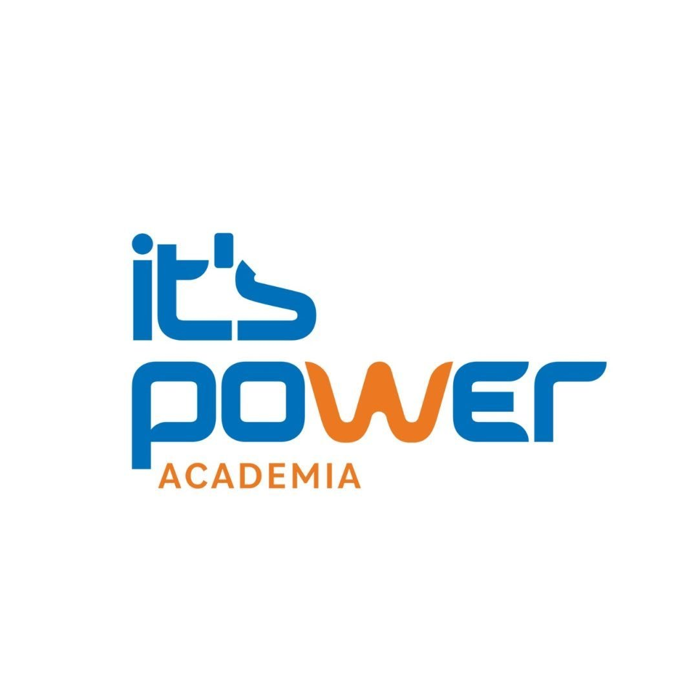

Web & Portais
Sites, web apps e portais do cliente sob encomenda — do design ao deploy. PWA instalável, SEO técnico, dados estruturados e performance medida.
Applied Intelligence
Do design ao deploy
Sistemas que pensam antes de executar. Análise, estratégia e estética no mesmo lugar.
Engenharia, dados e estética operando como um só ecossistema.
Sites, web apps e portais do cliente sob encomenda — do design ao deploy. PWA instalável, SEO técnico, dados estruturados e performance medida.
Fluxos que eliminam trabalho manual: integrações, webhooks e back-end serverless. O que hoje é planilha e cópia-e-cola passa a acontecer sozinho.
Banco de dados, hospedagem de aplicação e tratamento de dados — com controle de acesso por linha, prova de consentimento e LGPD tratada no desenho.
Produção e pós: motion graphics, legendas sincronizadas, áudio masterizado e sound design — em cadência fixa, dentro de um sistema editorial.
Antes do código: onde o processo trava, o que vale automatizar e o que é melhor deixar manual. Às vezes a entrega certa não é software.
Jornada, atendimento e conversão — reduzindo o atrito onde o sistema ignora como as pessoas pensam.
Avaliação e treino de IA, prompt engineering, análise de qualidade e inteligência de dados aplicada.
Painéis de dados em tempo real e relatórios que viram decisão.
Em breveMicro-produtos, APIs e ferramentas sob medida para o seu negócio.
Em breveA primeira não produz código — e é a que decide se o resto vale a pena.
Entender onde o trabalho trava hoje, quem toca em quê e qual o custo real do processo manual. Sai daqui um escopo, não um orçamento genérico.
Arquitetura, modelo de dados e quem pode ver o quê — definidos antes da primeira tela. Decisão de acesso e de privacidade entra agora, não depois.
Entrega em incrementos que você consegue abrir e usar, não um big bang no fim. Cada passo vai para o ar verificado.
Deploy, monitoramento e suporte técnico. O repositório e a infraestrutura ficam no seu nome, com seu acesso de administrador.
Construídos de ponta a ponta — não mockup, não protótipo.

Portal próprio onde o cliente acompanha a produção em tempo real: aprovação por fase, notificações, histórico de atividade e anotações. PWA instalável, multi-device.
Ver o portal ao vivo →Catálogo de pesos para musculação com montador de orçamento: o cliente escolhe itens e quantidades, o pedido persiste no navegador e sai formatado no WhatsApp. Sem checkout, sem carrinho abandonado.
Ver o catálogo →Os dois. A prática cobre desenvolvimento sob encomenda, software customizável, banco de dados, hospedagem, automação e suporte técnico. O site é a camada visível de um sistema que normalmente tem portal, autenticação e dados por trás.
Por um diagnóstico do processo, não por tecnologia. Primeiro se entende onde o trabalho trava e o que vale automatizar; só depois se decide o que construir — e se vale construir.
Sim: produção e pós-produção. Motion graphics, legendas sincronizadas, masterização de áudio e sound design, normalmente acoplados a um sistema editorial de cadência fixa — como no caso da ItsPower.
Sim. O repositório e a infraestrutura ficam no seu nome, com seu acesso de administrador. Sem dependência de fornecedor para continuar o projeto.
Tratada no desenho, não no fim: base legal declarada, prova de consentimento registrada com data, controle de acesso por linha no banco e política de privacidade que descreve os campos que são de fato coletados — não um texto genérico.
Se a resposta não for software, eu digo isso também.
ou deixe seus dados e eu te chamo